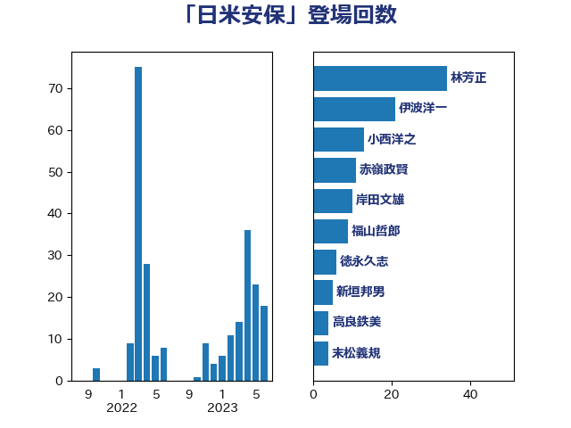

単語「日米安保」

| 林芳正 | 自由民主党 | 34 回 |
| 伊波洋一 | 無所属 | 21 回 |
| 小西洋之 | 立憲民主党 | 13 回 |
| 赤嶺政賢 | 日本共産党 | 11 回 |
| 岸田文雄 | 自由民主党 | 10 回 |
| 福山哲郎 | 立憲民主党 | 9 回 |
| 徳永久志 | 無所属 | 6 回 |
| 新垣邦男 | 立憲民主党 | 5 回 |
| 高良鉄美 | 無所属 | 4 回 |
| 末松義規 | 立憲民主党 | 4 回 |
| 浜田靖一 | 自由民主党 | 3 回 |
| 櫛渕万里 | れいわ新選組 | 3 回 |
| 柴愼一 | 立憲民主党 | 3 回 |
| 志位和夫 | 日本共産党 | 3 回 |
| 宮本徹 | 日本共産党 | 3 回 |
| 前原誠司 | 国民民主党 | 3 回 |
| 西銘恒三郎 | 自由民主党 | 2 回 |
| 羽田次郎 | 立憲民主党 | 2 回 |
| 篠原豪 | 立憲民主党 | 2 回 |
| 田村貴昭 | 日本共産党 | 2 回 |
| 片山さつき | 自由民主党 | 2 回 |
| 水野素子 | 立憲民主党 | 2 回 |
| 松原仁 | 立憲民主党 | 2 回 |
| 岡田克也 | 立憲民主党 | 2 回 |
| 北神圭朗 | 無所属 | 2 回 |
| 井上哲士 | 日本共産党 | 2 回 |
| 高木かおり | 日本維新の会 | 1 回 |
| 馬場伸幸 | 日本維新の会 | 1 回 |
| 音喜多駿 | 日本維新の会 | 1 回 |
| 青柳仁士 | 日本維新の会 | 1 回 |
| 青山繁晴 | 自由民主党 | 1 回 |
| 長妻昭 | 立憲民主党 | 1 回 |
| 長友慎治 | 国民民主党 | 1 回 |
| 美延映夫 | 日本維新の会 | 1 回 |
| 笠井亮 | 日本共産党 | 1 回 |
| 穀田恵二 | 日本共産党 | 1 回 |
| 秋本真利 | 無所属 | 1 回 |
| 石橋通宏 | 立憲民主党 | 1 回 |
| 石川博崇 | 公明党 | 1 回 |
| 石井苗子 | 日本維新の会 | 1 回 |
| 浜田聡 | NHK党 | 1 回 |
| 梅村みずほ | 日本維新の会 | 1 回 |
| 柴田巧 | 日本維新の会 | 1 回 |
| 松川るい | 自由民主党 | 1 回 |
| 本庄知史 | 立憲民主党 | 1 回 |
| 山本太郎 | れいわ新選組 | 1 回 |
| 小野泰輔 | 日本維新の会 | 1 回 |
| 小田原潔 | 自由民主党 | 1 回 |
| 宮口治子 | 立憲民主党 | 1 回 |
| 大塚耕平 | 国民民主党 | 1 回 |
| 堀井巌 | 自由民主党 | 1 回 |
| 國場幸之助 | 自由民主党 | 1 回 |
| 和田有一朗 | 日本維新の会 | 1 回 |
| 古川禎久 | 自由民主党 | 1 回 |
| 中川正春 | 立憲民主党 | 1 回 |
| 上田清司 | 国民民主党 | 1 回 |